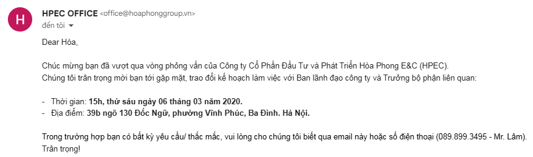
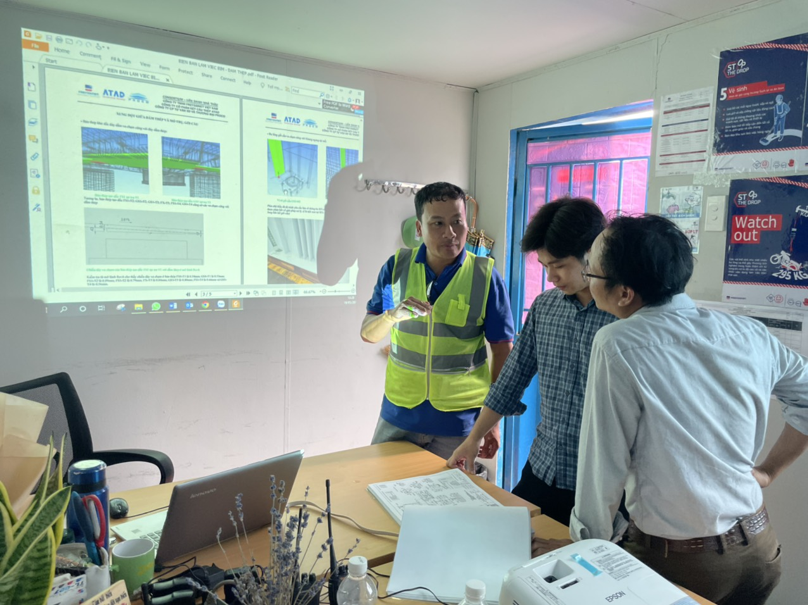
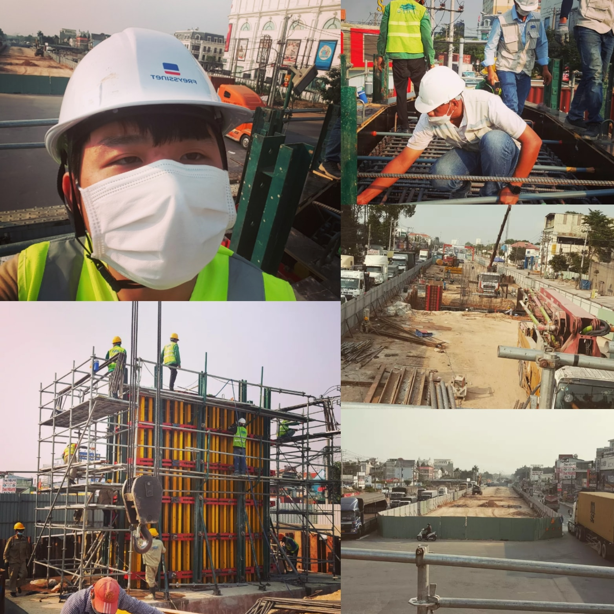
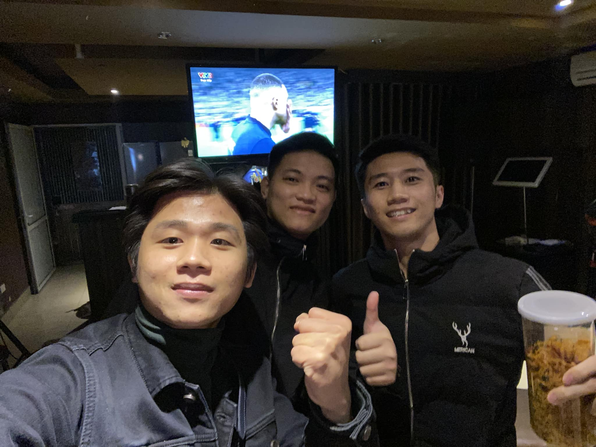
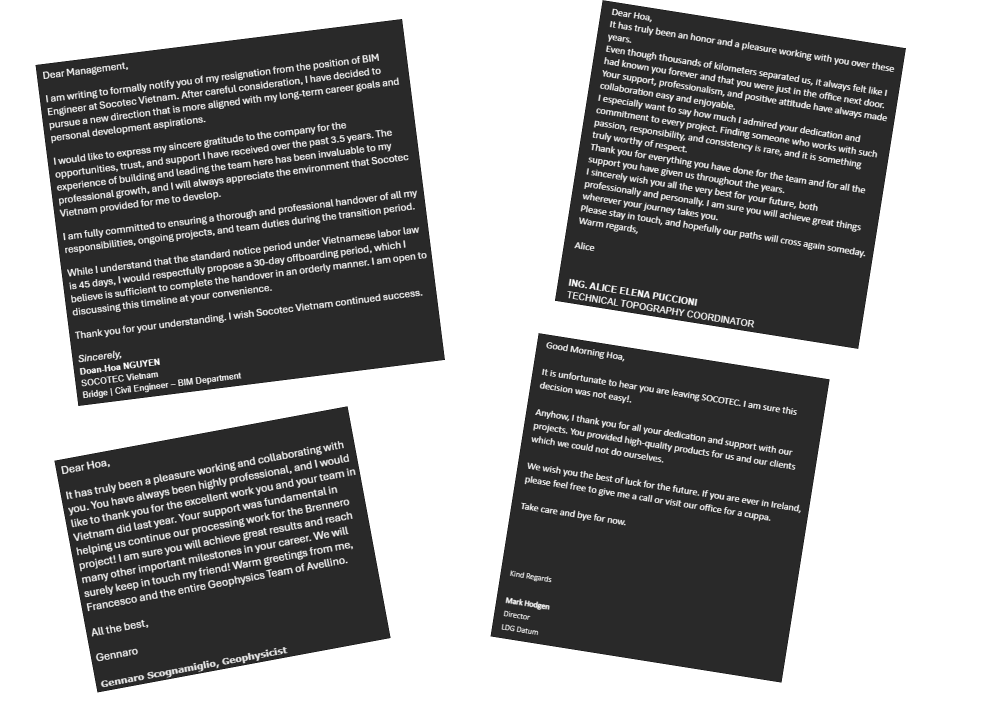

A life is a series of moments, each one building upon the last. Here are some of the key points that have shaped who I am today.
September 2015 · Hanoi
Studied at the University of Transport and Communications. Major: Bridge & Tunnel Engineering
I still remember the first time I held a blueprint in my hands, feeling the weight of the future in my palms. It was at this university where I began to understand the intricate dance between design and reality.
At the GSS Scholarship Ceremony 2019, I’m third from the left in the front row.
March 2020 · Hanoi
Joined Chodai & Kiso - Jiban Vietnam as a Civil Engineer.
To be honest, right after graduating, I made a quiet but defining decision: I would apply to only one place-choosing a completely different path from traditional design, stepping into BIM. Had I not made it in at that moment, my life might have taken an entirely different direction.

The interview result
December 2021 · Binh Duong & HCMC
Made a bold decision, went to work at a real bridge construction site.
When I examine my career path, it appears that my work is not progressing as I had hoped. I chose to step into a real-world BIM project-one that spanned from design all the way to construction and completion. It wasn’t an easy decision. I left the comfort of an air-conditioned office for a jobsite under the sun and wind, working alongside people from all walks of life.
Looking back, it was one of the most valuable choices I’ve made. I observed, collaborated, and learned from different personalities-taking something meaningful from each of them. The heat, the dust, the rawness of concrete and steel-they didn’t just shape the project; they reshaped me, making me tougher, more grounded, and far more resilient.

On a meeting to avoid the conficts before contructing the bridge, with two construction managers

Under the sun, all day, experience the site works
September - November 2022 · Nghe An
Took a gap months and redirected my career to a more practical path.
Three months of gap time, apply the rule 80/20, 80% of the time for learning and the rest is for making money. The best thing is that I lived in my hometown, the place makes me feel most comfortable. This low note is totally worth.
December 2022 · Hanoi
Returned to the capital city and started a new career at Socotec Vietnam.
Trying to find a new direction in life, I decided to return to the capital city and start a new career at Socotec Vietnam. I was excited to work with a team of talented engineers, who were former international students. The work was challenging at first, but I enjoyed every moment of it.
December 18th 2022 · Hanoi
Argentina won the World Cup
My one and only idol finally fulfilled his dream - the World Cup. The final was absolute madness, stretching over two relentless hours; there were moments I felt my heart might give out.
But fate was kind. The man who chased this dream with unwavering belief was rewarded in the end. I watched him endure it all, the highs, the crushing lows, the failures that could have broken anyone, the weight of a nation on the shoulders of a small captain.
And he did it. In that moment, when he finally lifted the trophy, millions of football lovers felt the same overwhelming joy.
That day, I felt something close to complete.

Enjoying the winning of our idol - Messi, with my brothers
June 2026 · Hanoi
Back in the flow of national development — North–South High-Speed Rail at Vinhomes.
After more than 3.5 years at Socotec - growing from a junior engineer into a team leader, and having the chance to take part in business development with our clients in Italy - I've decided to move on.
There are many reasons behind this decision, but I'll simply say that my journey at Socotec Vietnam should come to a close here.
In the span of just one week, I made the call: I submitted my CV, interviewed, received an offer, and handed in my resignation.
I had once weighed everything carefully - staying put with my 20 free hours each week to keep learning and growing on my own, or challenging myself in a new environment, one where large-scale projects tied to the country's development have been reigniting my passion for this profession.
June this year feels so different from every June before it.

Saying goodbye is always difficult when you've received positive feedback from clients you've worked with for many years.Pictures with my lovely colleagues.